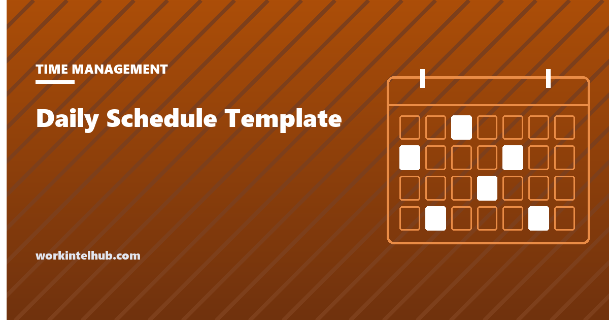

Daily Schedule Template

A daily schedule template is a grid of the day's hours with space to write what happens in each. It is the simplest planning tool there is, which is why it works: fixed commitments go in first, the free hours become visible, and the important work gets a slot instead of a hope. The same grid serves three different jobs, an individual's hourly plan, a time-blocked day built around a top three, and a shift schedule for a team on a floor, and the generator below produces all three.
The rest of the page covers how to fill the grid so the day survives contact with reality, which layout fits which situation, and how the daily template connects to the weekly plan and the task list without becoming a third system to maintain.
Daily schedule generator
Nothing typed here leaves your browser. Print gives a paper schedule; fixed items are placed in their rows and everything else is left open.
Three layouts
| Layout | Rows | For | What to write in it |
|---|---|---|---|
| Hourly schedule | 30 or 60 minutes | Anyone whose day is mostly appointments: managers, clinicians, sales | Fixed items in their rows; the gaps are the plan |
| Time blocks with a top three | 30 minutes | Knowledge work with one or two substantial tasks | The top three at the head; each assigned to a block; a tick box per block |
| Shift schedule | 15 or 30 minutes | A team on a floor, counter or line | Stations by time with staff names; breaks; handover notes |
The hourly layout is the one most people picture. The blocks layout is the daily unit of time blocking, and it is the one to use if the day has work in it that needs more than an hour of attention. The shift layout is a single day's slice of the weekly work schedule, useful when the day's coverage needs to be visible by the hour rather than by the shift.
Filling it so the day holds
- Fixed items first. Meetings, appointments, the commute, lunch. They constrain everything else and they do not move.
- Then the one thing. The task the day exists for, in the best two-hour gap, ideally the first one. If the grid has no two-hour gap, the day has a different problem and the fix is a declined meeting, not a tighter plan.
- Then the top three, one block each. A block is 30 to 90 minutes with a single task. The six-task list supplies the candidates; the grid takes the three that fit.
- Leave a third open. Interruptions arrive every two minutes on average in recent workplace studies, and a full grid breaks at the first one. Open rows are where the unplanned goes without displacing the planned.
- Batch the small things. Email, chat, admin: two rows, mid-morning and late afternoon, not a background hum across every row.
- End with the review row. Five minutes: what got done, what moved, tomorrow's first task. The template prints the prompt.
For shift schedules the rules change: coverage first (who must be at which station when), breaks placed to satisfy state meal and rest rules (California's 30-minute meal before the end of the fifth hour is the strictest common one), and the handover written before the shift ends. The rotating shift guide covers the patterns above the daily level.
Daily, weekly and the list: keeping it to one system
A daily schedule, a weekly planner and a task list can become three systems that disagree. They stay one system if each owns something different. The weekly planner owns outcomes and the protected focus block; the task list owns the candidates for each day; the daily schedule owns the hours. The weekly plan is written on Sunday, the six-task list each evening, and the daily grid is filled from those two in five minutes the same evening.
Paper suits the daily grid better than any app because it sits on the desk and cannot notify you; the calendar app holds the fixed items and syncs with colleagues. Printing the grid with the fixed items already placed, which the generator does, is the step that makes the paper version worth keeping.
Key takeaways
- A daily schedule is a grid of hours: fixed commitments first, the day's one thing in the best gap, then the top three in blocks, then a third left open.
- Use the hourly layout for appointment-driven days, the blocks layout for knowledge work, and the shift layout for a team on a floor.
- Batch email and admin into two rows rather than letting them run across every row.
- Leave open time; a full grid fails at the first interruption.
- The weekly planner owns outcomes, the task list owns candidates, the daily grid owns hours. Fill it each evening in five minutes.
- Shift schedules put coverage first and breaks where state rules require them.
Frequently asked questions
What should a daily schedule template include?
Rows for each 15, 30 or 60 minutes of the working day, space to write fixed commitments and planned blocks, a top-three list for the day's priorities, a tick box or done column per block, and a line at the end for the evening review and tomorrow's first task. The generator on this page prints all of that.
How do I make a daily schedule that I actually follow?
Put fixed items in first, give the day's most important task the best two-hour gap, assign only three planned blocks, leave about a third of the rows open for the unplanned, batch email into two slots, and fill the grid the evening before rather than the morning of. Plans fail when every row is filled.
Should the rows be 15, 30 or 60 minutes?
Thirty minutes suits most office days: fine enough to place a half-hour meeting, coarse enough to read at a glance. Fifteen-minute rows suit clinics, shift floors and days full of short appointments. Sixty-minute rows suit block-based knowledge work where nothing shorter than an hour is scheduled.
What is the difference between a daily schedule and a to-do list?
The list says what; the schedule says when. A list can hold twenty items with no commitment to any; a schedule forces each planned item into an hour, which is why only three or so fit. Use the list to choose candidates and the schedule to commit to the ones that get a slot.
How do I make a daily shift schedule for staff?
Start from coverage: which stations must be staffed at which times. Assign people to stations by time row, place breaks to meet state meal and rest requirements, note handover points, and print it where the team can see it. The shift layout in the generator produces the grid; the weekly work schedule template covers the roster above it.
Is a paper daily schedule better than an app?
For the hourly plan, usually. Paper sits in view, does not notify, and has a natural limit. The calendar app should still hold the fixed items so they sync with colleagues; the generator prints them into the grid so the two do not disagree.